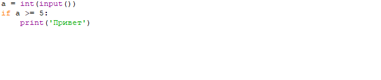
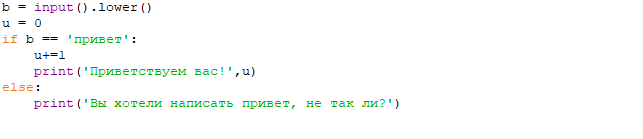
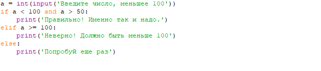

Условные операторы
Операторы if,else
Предлагаю пока что рассмотреть такие операторы: if, else, elif. Они являются основными. Есть, конечно,
и другие: while(проверка условия или же цикл); for(цикл с заданным параметром), - их мы рассмотрим чуть позже, а
пока что остановимся на самом основном.
Итак, первый оператор - if, основа основ. После того, как мы написали if должно следовать какое-то выражение.
Если оно истинно, то выполняются инструкции, определяемые данным оператором. Выражение может быть истинным
только в том случае, если его результатом является число не равное нулю, непустой объект, либо логическое True.
После выражения нужно обязательно поставить двоеточие.
ВАЖНО: начало кода после двоеточия отделяется четырьмя пробелами слева!
Пример программы с использованием if:

Довольно тривиальная программа, где если 'a' больше, либо равно 5, то выводится "привет", а если
не выполняются данные условия, то ничего не выводится.
Или же в переводе на русский - иначе. До этого был оператор 'if', то есть 'если'. Теперь же посмотрим предыдущий оператор
с нынешним и как они работают в паре.

Вот эта программа как раз использует if в купе с else. Кстати, забыл упомянуть про 'lower()' - эта функция делает все буквы, которые
вы, в данном случае, введете - маленькими, что дает избежать случая внезапного написания пользователем команды с маленькой/большой буквы.
Очень удобно. Но теперь вернемся к теме. If является как бы тем, как должна работать программа и если все идет по сценарию,
то выводится и приветствие и цифра 1(не бойтесь, это подготовка к циклу while и счетчику). А если все пошло немного не так, то
выводится явная 'претензия' пользователю. То есть если не выполнились предыдущие условия, то выводится то, что в else.
Примерно так и работает if в купе с else.
Оператор Elif
Это тот оператор, которым удобно пользоваться. Пишется он, обычно, после конструкции 'if' и делать его можно хоть сколько угодно раз,
роли это не играет. Переводится примерно так: 'если не выполнено предыдущее условие, но выполнено текущее'. Предлагаю рассмотреть
на примере.

Здесь все как обычно: если два предыдущих условия не выполняются, то выполняется самое последнее, то есть else.